All Destinations
By Mary Reed
April is when the Wow Factor kicks in at Highlands Nature Sanctuary. “We are here to save the biodiversity of the Eastern forests,” says co-director Nancy Stranahan.
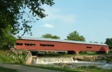
By Attila Horvath
This is how they roll in Parke County: by truck, tractor and Amish buggy. This is how we roll: on two wheels.
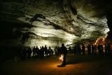
By Attila Horvath
It’s not necessary to use hyperbole to make a case for Mammoth Cave, because the facts are more than enough. It’s an International Biosphere Reserve as well as a UNESCO World Heritage Site.
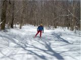
By Lisa Kaufman
If you yearn for that quiet spot you can ski to in the woods that hasn't been trampled to bare ground by a mad crush of downhill powder bunnies, southwestern PA's Laurel Ridge deserves a red circle on
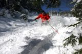
By Mary Reed
With 180 inches of natural snow annually, it might seem odd to call Snowshoe Mountain a hot spot, but 650,000 visitors a year can’t be wrong.
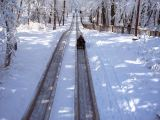
By Maryhelen Mackin Chadwick
Imagine flying downhill at 40 miles per hour old school style on wooden toboggans – sounds fun, doesn’t it?
By Michelle Anderson and Mark Steinmetz
Before booking that expensive flight to Vermont or submitting to the mind-numbingly long drive to the upper expanses of Michigan, consider this: Perhaps the best cross-country ski destination in the entire East is located in our very own Ohio River Valley.
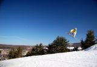
By Attila Horvath
“You can’t please everyone” is a memo that Wisp didn’t get. The outdoor activities list at this western Maryland resort is long: 32 slopes and trails, terrain parks for boarders, snow tubing, cross-country skiing, a winter roller coaster and tons more.
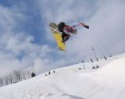
By Mary Reed
Bundle up in your Pittsburgh Steelers hat and jacket (“It’s required on game day,” jokes former ski instructor Joe Sesti) and hit the slopes at Seven Springs Mountain Resort on opening weekend
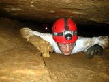
By Mary Reed
When the summer and fall crowds die down, cave exploring – the headlamp-illuminated, belly-crawling kind – picks up at Marengo Cave in southern Indiana’s karst country.
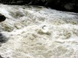
By Mary Reed
Calling this place “the Grand Canyon of the South” is a bit of a disservice.
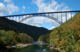
By Mary Reed, photos by Attila Horvath
There is only one problem with the New River Gorge: option paralysis. Will it be whitewater rafting, kayaking, rock climbing, mountain biking, hiking, fishing, photography or even BASE jumping?
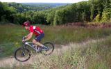
By Mary Reed
A few years ago, if you were a mountain biker in Indiana, you were also out of luck.
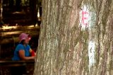
By Mary Reed
Mount Airy Forest is Cincinnati’s real urban jungle – a 1,500-acre forest playground with 30 miles of hiking and bridle trails, a variety of wildlife, a popular arboretum, a dog park and even a fu
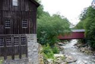
By Lisa Kaufman
Slippery Rock Creek runs strong and deep through the gorge that bears its name. Above and below the centerpiece grist mill, the waters teem with stocked trout and smallmouth bass.